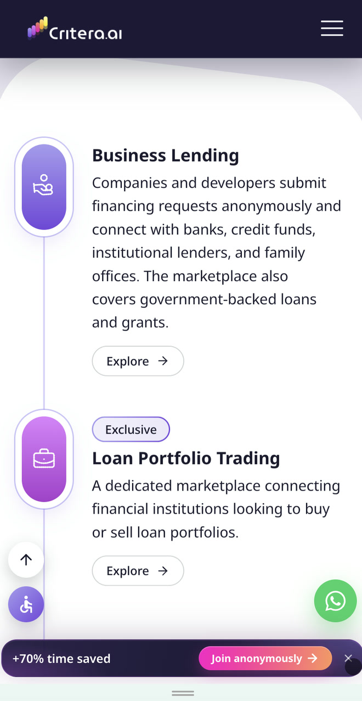
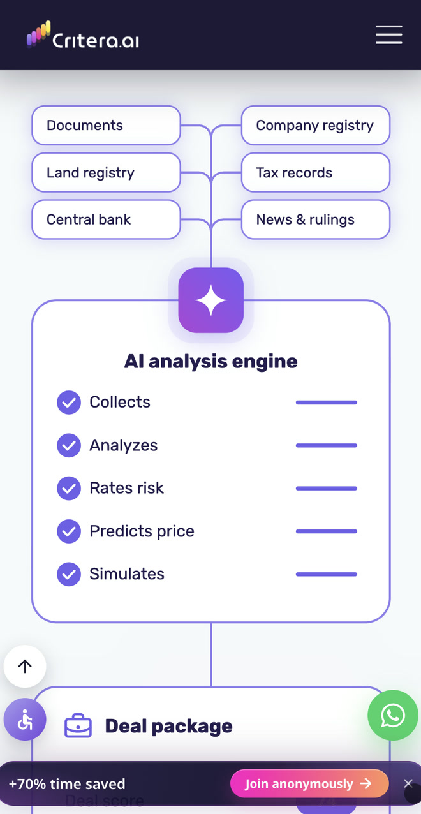
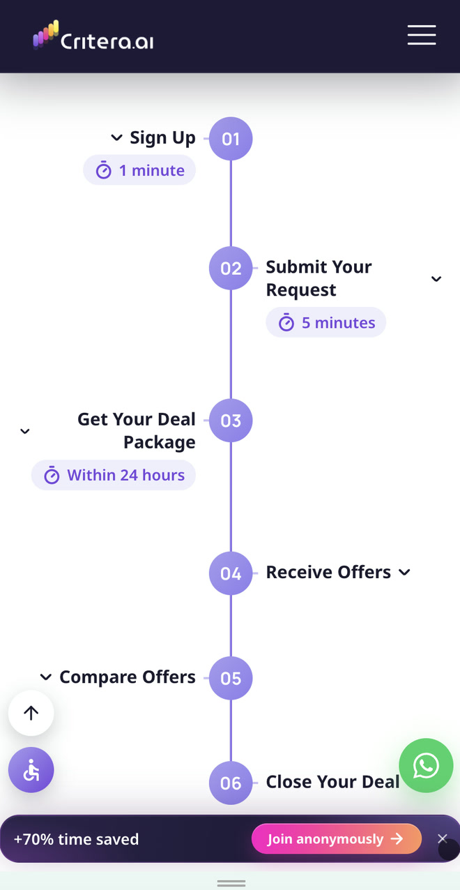
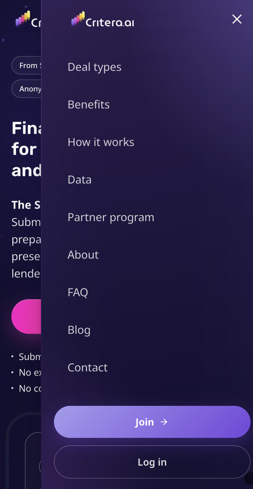

Business Lending
Meets AI
A marketplace connecting businesses and developers with lenders, bringing financing requests and offers together in one place.
From brand identity to a live website and advertising videos:
branding, design, animation, and development.
From a Financial Concept
to a Digital Experience
About Critera
Critera is a marketplace for business lending and project financing. It connects businesses seeking funding with lenders and professional partners, helping them move deals forward.
My Role
I joined the project after the business concept had already been defined.
I led:
- Visual and market research
- Positioning and messaging
- Branding, visual identity, and website design
- Animation design and development in code
- Front‑end development
- Blog and content creation
- Advertising video production
- Marketing and SEO consulting
Project Duration
2 months
Three Audiences.
Three Perspectives.
The challenge was to show each audience what Critera offers them and how they all connect.
Companies & Developers
Looking for Financing
for Your Business or Project?
Once you submit a request, AI prepares your credit package and matches it with relevant lenders. Compare the offers in one place and choose the financing that works for you.
Lenders
Looking for Deals
to Finance?
Find deals matched to your lending criteria. Each comes with completed underwriting and a credit package ready for committee review. Free of charge.
Brokers & Advisors
Managing Clients
Seeking Financing?
Prepare a credit presentation in minutes and connect with professional lenders, while keeping your clients registered under your name.
One Homepage.
Clear Priorities.
At first, we explored focusing on a single audience. But as we discussed and sketched different approaches, it became clear that this would push the value for other participants into the background.
I proposed a shared homepage introducing the marketplace to everyone, supported by dedicated landing pages for each audience in future campaigns.
To balance the needs of the primary audience with those of other participants, I defined the content priorities:
Companies and developers seeking financing
Lenders
Brokers and professional partners
Businesses seeking financing received the most attention. Lenders were given information about deal quality and matching, while professional partners had a dedicated place and a direct invitation to join.
The language followed the same approach: clear, professional, and mostly neutral, respecting the interests of every audience.
Making the Value
Measurable
Research into the industry and discussions with the team highlighted the need to communicate benefits in terms that matter to users: time, cost, and progress toward closing a deal. I brought key figures into the design so visitors could understand the value at a glance.
Time saved throughout the process
Savings for lenders on underwriting, screening, and marketing costs
To prepare a financing request and professional presentation
From submitting a request to closing, depending on deal size and complexity
These figures are company estimates, reportedly based on internal testing, and may be updated over time.
A Symbol
of Growth
The name Critera was inspired by the idea of criteria-based selection, with AI representing the technology behind the platform.
I designed a logo featuring five colorful bars rising like a growth chart.
The colors reflect the variety of participants and opportunities in the marketplace. Five bars allowed me to suggest diversity while keeping the symbol simple and recognizable. Rounded edges make it feel more approachable.
Finance with a
Tech-Driven Personality
I wanted the website to spark curiosity and communicate the company's professionalism from the first interaction.
I combined the restraint of the financial world with a colorful palette reflecting the range of opportunities in the marketplace.
Deep purple adds depth and brings out the brand colors. Translucent surfaces and gradients introduce light and layers, giving the idea of transparency a visual expression. Clear typography completes the design and keeps the content readable.
A Visual Identity
That Flows
Diagonal surfaces and rounded corners became part of Critera's visual identity.
I used them in different compositions to create a recognizable look and a rhythm that encourages scrolling.
Alternating dark and light sections adds variety and creates quieter moments for reading. This keeps the visual design and content in balance.
Discover First.
Join When Ready.
I chose a single, continuous homepage to introduce visitors to Critera.
Right after the hero, each audience sees a relevant question, a short answer, and a link to the appropriate registration flow.
The page then introduces the marketplaces, benefits, and process. The About and Blog pages offer more detail, while calls to action remain accessible throughout the page.
The goal was to build interest and guide visitors toward registration or a conversation with the team.
Showing How
the Connections Work
In the hero animation, a single financing request receives offers from multiple lenders.
The animation turns the marketplace concept into a simple scenario that's easy to understand at a glance.
Further down, four marketplaces move around Critera: Business Lending, Loan Portfolio Trading, Syndication, and Equity & Partnerships.
The animation shows the range of opportunities, with each marketplace linking directly to the relevant registration flow.
Other animations extend the same idea across the site.
Explaining the Technology
Behind the Deal
Feedback from finance professionals made it clear that the AI engine needed more visibility on the website.
In response, I designed a dedicated section with an explanation and animation.
It follows the flow of information from documents and data sources through analysis, credit package preparation, and lender matching.
The animation turns a complex process into a clear visual sequence, showing where technology does the work and where people make decisions.
Knowing What Happens Next
and Who You're Dealing With
A timeline explains the six steps from registration to closing, including estimated timeframes. Visitors can click each step to see more details.
The benefits section highlights what Critera offers: anonymity, credit package preparation, and access to professional lenders.
For brokers and financial advisors, I explained how they could manage clients discreetly and submit requests anonymously.
Team photos, professional backgrounds, and visible contact details make it easier for visitors to reach out and ask questions.
The FAQ includes search and topic filters. The blog, for which I developed the content, provides more detailed answers and supports organic visibility.
The Experience
Goes Mobile
I adapted the layouts, animations, and timeline for mobile, preserving the visual hierarchy and easy access to registration.
The brand identity stays consistent, while each composition adjusts to the screen size.




A Foundation
for What Comes Next
I organized the colors, typography, and components into a Figma design system. It documents the visual language and provides a consistent foundation for future development.

One Brand.
A Story for Every Audience.
I created advertising videos built around business opportunities following a successful tender, with examples from construction and industry.
The stories illustrate the financing gap and show how businesses can find potential lenders through Critera.
The characters and settings reflect each target audience, while animated colors, shapes, and typography carry the brand identity across the videos.
From Design
to a Live Website
I built the front end with Claude Code, based on the designs and animations I had created.
I worked with the team in a shared code repository, tested the website and its registration and login flows, and launched the site.
Working directly in code also allowed me to test and refine the layouts and animations within the actual website.